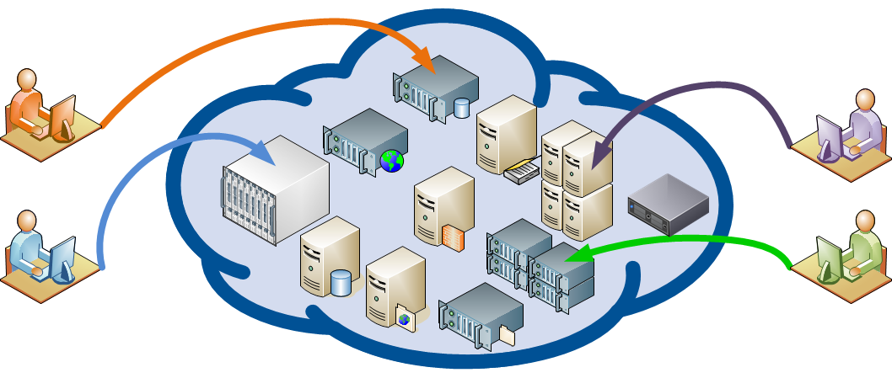
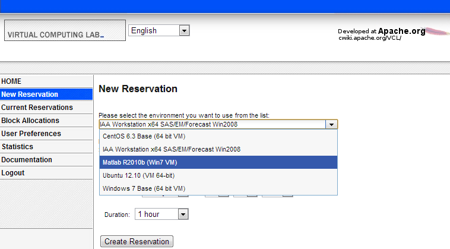
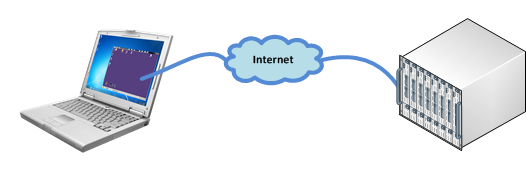

VCL stands for Virtual Computing Lab. It is a free & open-source cloud computing platform with the primary goal of delivering dedicated, custom compute environments to users.
The compute environments can range from something as simple as a virtual machine running productivity software to a cluster of powerful physical servers running complex HPC simulations.

VCL supports provisioning several different types of compute resources including physical bare-metal machines, virtual machines hosted on several different hypervisors, and traditional computing lab computers you would normally find on a university campus.
The user interface consists of a self-service web portal. Using the portal, users select from a list of customized environments and make reservations.

Behind the scenes, the scheduling components built into the web portal determine which compute resources to assign to the reservations. The requested environment is then dynamically provisioned, secured, and configured to allow remote access by the user. The user then remotely connects to the remote compute environment using remote desktop, SSH, or any of the other supported protocols.

VCL became an Apache Software Foundation top level project on June 20, 2012.